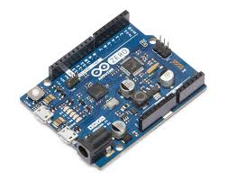
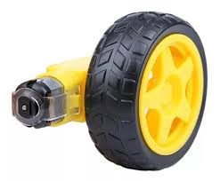
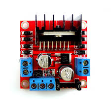
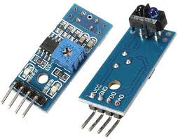
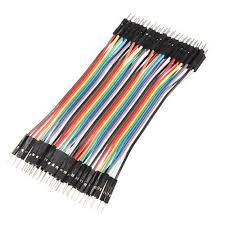
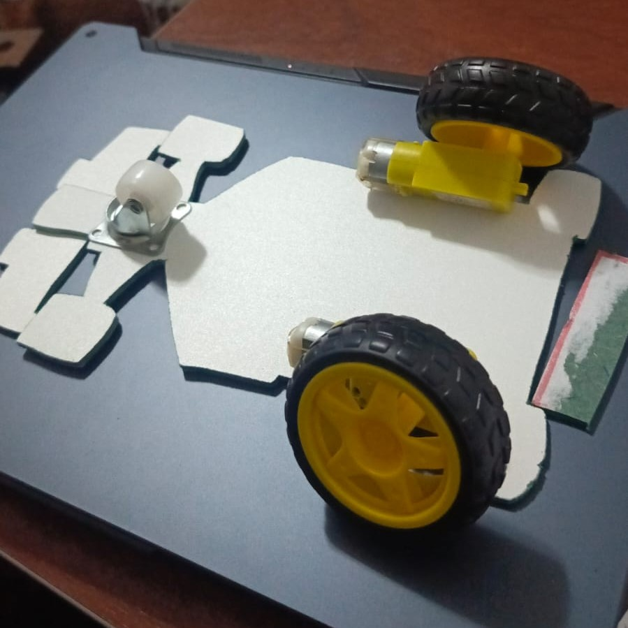
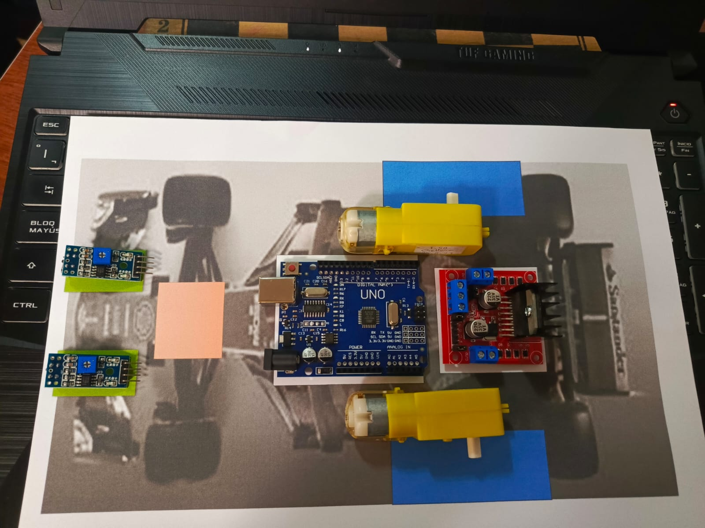
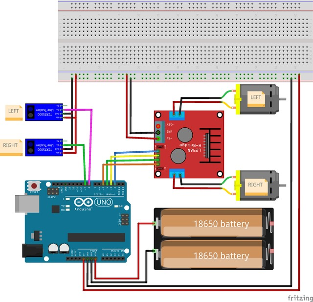

Componentes necesarios
- 1 Placa Arduino (Uno, Nano o similar).

- 1 Módulo de alimentación o batería.
- 2 Motores DC con ruedas.

- 1 Driver de motores (L298N o similar).

- 2 Sensores de color o infrarrojos (IR).

- Cableado para conexiones.

- Base para el robot.

- PC con software Arduino IDE.
Para construir y programar Danbot, sigue estos pasos detallados. Acompaña el proceso con imágenes animadas que ilustren cada fase, como esquemas de conexión, diagramas de montaje y capturas de pantalla del código en Arduino IDE.
1. Ensamblaje del Robot 🛠️
- Fija los motores a la base del robot asegurándolos con tornillos.
- Conecta las ruedas a los motores para permitir el desplazamiento.
- Asegura el driver de motores y los sensores de color en la base, manteniendo una disposición estable y funcional.

2. Conexiones Eléctricas ⚡
- Sigue el esquema de conexión del Manual de Uso, asegurando que el driver de motores, los sensores de color y la placa Arduino estén correctamente conectados.
- Utiliza cables jumper para realizar las conexiones de manera organizada y evitar cortocircuitos.

3. Carga del Programa 💻
Abre Arduino IDE en tu computadora.
Copia y pega el siguiente código en el editor:
cpp
CopiarEditar
// *** DECLARAMOS LAS VARIABLES QUE VAMOS A UTILIZAR ***
static int PinIN1 = 2;
static int PinIN2 = 3;
static int PinIN3 = 4;
static int PinIN4 = 5;
static int Pin_sensor1 = 8; // Recoge señales del sensor izquierdo
static int Pin_sensor2 = 9; // Recoge señales del sensor derecho
void setup() {
Serial.begin(9600);
pinMode(PinIN1, OUTPUT);
pinMode(PinIN2, OUTPUT);
pinMode(PinIN3, OUTPUT);
pinMode(PinIN4, OUTPUT);
pinMode(Pin_sensor1, INPUT);
pinMode(Pin_sensor2, INPUT);
}
void loop() {
int value1 = digitalRead(Pin_sensor1);
int value2 = digitalRead(Pin_sensor2);
if (value1 == LOW && value2 == LOW) {
Serial.println("Adelante");
MotorAdelante();
}
if (value1 == HIGH && value2 == HIGH) {
Serial.println("Detenido");
MotorStop();
}
if (value1 == HIGH && value2 == LOW) {
Serial.println("Izquierda");
MotorIzquierda();
}
if (value2 == HIGH && value1 == LOW) {
Serial.println("Derecha");
MotorDerecha();
}
delay(20);
}
void MotorIzquierda() {
digitalWrite(PinIN1, HIGH);
digitalWrite(PinIN2, LOW);
digitalWrite(PinIN3, HIGH);
digitalWrite(PinIN4, LOW);
}
void MotorDerecha() {
digitalWrite(PinIN1, LOW);
digitalWrite(PinIN2, HIGH);
digitalWrite(PinIN3, LOW);
digitalWrite(PinIN4, HIGH);
}
void MotorAdelante() {
digitalWrite(PinIN1, LOW);
digitalWrite(PinIN2, HIGH);
digitalWrite(PinIN3, HIGH);
digitalWrite(PinIN4, LOW);
}
void MotorStop() {
digitalWrite(PinIN1, LOW);
digitalWrite(PinIN2, LOW);
digitalWrite(PinIN3, LOW);
digitalWrite(PinIN4, LOW);
}
- Conecta la placa Arduino a la computadora y sube el código.
4. Pruebas Iniciales 🏁
- Coloca el robot sobre una línea negra en una superficie blanca.
- Verifica que reaccione correctamente: Se desplace hacia adelante al detectar el color adecuado.
- Gire a la izquierda o derecha según el sensor activado.
- Se detenga al no detectar un color válido.
¡Felicidades! 🎉 Danbot está listo para explorar el entorno con su sensor de color. Si deseas mejorar su funcionalidad, puedes ajustar los parámetros en el código y experimentar con nuevas configuraciones. 🚀